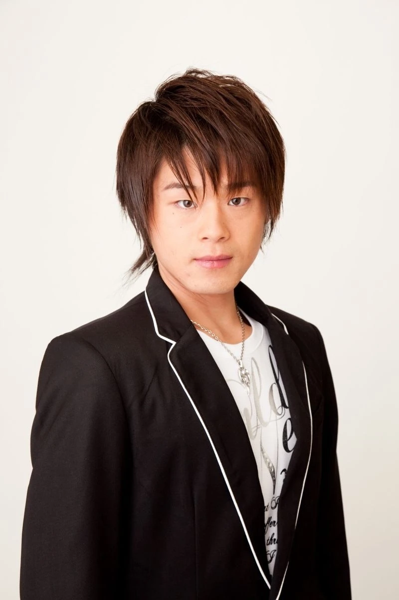
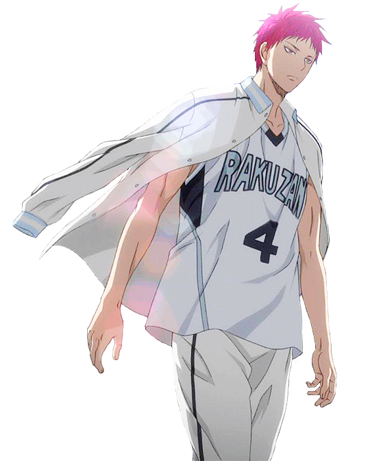
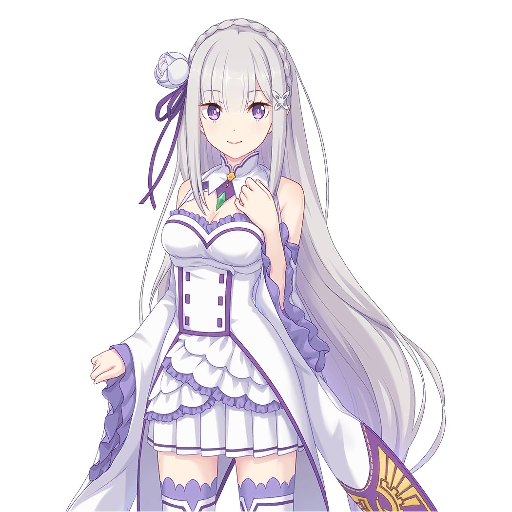
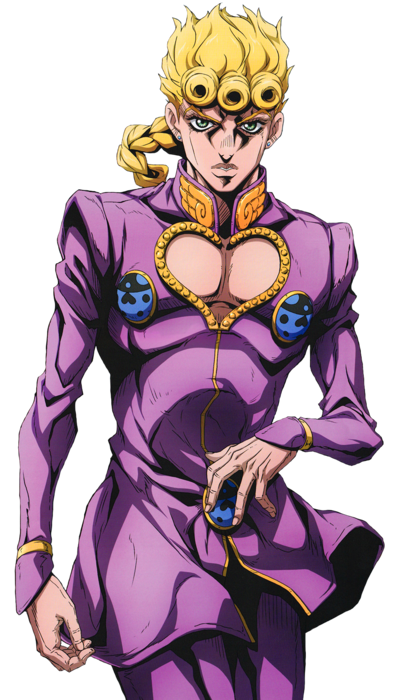

Introduction
This website will be talking about my favorite voice actors amongst the Japanese anime voice acting community. I will only be featuring Japanese voice actors as they are the original voices for the show, and I pay more attention and knowledge on them compared to some other language of voice acting. The website would include some of the popular characters from the voice actor, as well as some songs sung by the voice actor if they are a singer. Voice acting is something very interesting the more you get into it. I have tried voice acting before, but not very professional at it. This website is more of an admiration to the voice actors and all the hard work they have done. I am not a professional voice actor, so these are just some of my thoughts about them, enjoy.
Matsuoka Yoshitsugu

Matsuoka Yoshitsgu, is one of my most familiar japanese voice actors. He has voiced dozens of Harem Protagonists anime across the years. He has a very recognizable voice, and he is able to withstand different characters. It’s really funny how he has been chosen to voice harem anime protagonists while he is shy to talk to girls. There have been many interviews and live streams where we see him stand next to female voice actors and scare the crap out of him.
Kanda Sorata (The pet girl of Sakurasou)
“The pet girl of Sakurasou” is a very unique anime to me. It seems to be talking about love and relationships between a bunch of high school kids, but from the character developments we can really tell how each member of the Sakurasou has their own reputation and dreams to accomplish. Kanda Sorata, the character voiced by Matsuoka, who also is the main character of the series. He started off as a very normal boy who likes to take care of cats, but the main girl of the series, Shiina Mashiro, really influenced him to define his own dreams and things he wanted to work towards. He tried really hard to become a game designer, but failed to gain attention from big companies, but this is exactly the process that encourages us to face our own failures and proceed to the next stage in life.
Kirito (Sword Art Online)
As mentioned before, “Sword Art Online” is the anime that got me into watching more anime. Therefore, the voice of the main character, Kirito, is something I am more than familiar with. Turns out, he is also voiced by Matsuoka. This is probably the character that got Matsuoka to go down the trend to voice harem anime protagonists, as Kirito has a very soft voice line when talking to his girl, Asuna, but has a wild one towards anybody else. The contrast really set the scene and tone for this voice actor. From the voice acting, we can really tell the strong confidence coming out from the character, and the kindness towards his own comrades. I still remember when he said, “My level is 79, my self regeneration is larger than your DPS combined.” That is probably one of the coldest lines he said in the first season.
Sora (No Game No Life)

“No Game No Life” was recognized as a rival to sword art online at the time. Both anime are many people’s first anime. Fun fact, both main characters are voiced by the same character. Sora, the main character of No Game No Life is very different from Kirito. Sora is a genius in the anime, and has shown his intelligence many times in the series. He has always been a confident individual in his game play throughout the series. However, there are also moments that are intentionally funny for the audience to watch, which makes the voice acting diverse in the series. This gives additional layers to the character and makes the plot more interesting.
Bell Cranel (Is it wrong to pick up girls in a dungeon?)

“Is it wrong to pick up girls in a dungeon?” Is honestly one of the more surprising anime I have watched. My initial intention of watching this series was the design of the female characters? I thought that this would just be a single season filler like a lot of the other ones introduced around the same time. However, this anime really got popularized as time moves on. They then introduced season 2, 3, 4, and are now announcing to produce season 5 very soon. The main character, Bell Cranel, voiced by Matsuoka, is a very weak adventurer. His God family is also the weakest amongst all, as he is the only person in his family. The story incorporated Greek mythology, as it contains gods such as Apollo, Zeus, Loki, Hermes, etc. As he progresses into the story, we see how Bell as a character becomes more mature and strong. The voice acting also changes throughout the story, as it becomes more confident in self and others.
Koyasu Takehito
Koyasu Takehito, similar to Matsuoka, has a very distinctive voice. In addition, his voice is very difficult to replicate. It is very easy to tell if a character is voiced by Koyasu. The voice contains a very strong, wise, elegant, and sometimes even craziness. From the variety of different characters voiced by this person, the voice itself even gives a new layer to the character, which shows how successful of a voice actor he is. However, it is very difficult to find him in any public events, since his personality makes him uncomfortable in front of the crowd, very unfortunate. I really wanted to see Koyasu voice a character live in an event.
Dio (JoJo's Bizarre Adventure)
Dio is the character that introduced Koyasu to me. His voice acting on Dio is just a form of art. The characterization of dio, Craziness, evilness, also maintaining intelligence and elegance as a vampire. In the first season of JoJo, we see Dio as a bad kid, turning into an actual threat to the Joestar Family, eventually defeated by Jonathan. This state didn’t grab too much attention from me on the character, it was season three that really demonstrates the skill and talent of the voice actor. This is one of the fewer cases where the voice actor made the character better.
Roswaal (Re:Zero)
“Re: Zero” is one of the early anime I have watched. Although Koyasu is not voicing the main character of the show, but Roswaal, the character he voices is also one of the more important characters in the show. As the main character Subaru doesn’t have much powers himself, he therefore needs other characters to help him gain the future he is hoping for. Roswaal is presented as a very elegant gentleman in the mansion, but later reveals that his mind is tied to a very strong obsession. The revealing process is perfectly performed by the voice actor.
Shirogane Papa (Kaguya sama: Love is War)

“Kaguya sama: Love is War” is a very typical love comedy, where both male and female characters are in love with each other, but they refuse to be the first one to admit it, that started this series of mind games around them. Koyasu is voicing the father of the main character, Shirogane Papa. This is also a fun fact of the show, we still to this date don’t know the name of this character, he is literally called Shirogane’ dad. This is a special character of Koyasu, where the character is a completely funny character. However, because he has done such a great job on other characters, it makes me always think of other famous characters he has voiced.
Demon lord Clayman (That Time I got Reincarnated as a Slime)
“That Time I got Reincarnated as a Slime” is one of the best anime that I have watched in recent years. The concept of a slime beating every other opponent, even the gods. Koyasu is voicing the main Villain in the first and second season, Demon lord Clayman. This is a very typical hated character played by Koyasu. Hated doesn’t mean that people don’t like this character, but it's the way Koyasu played the character that made everyone want to beat the crap out of him, and when Clayman did get defeated by our fellow slime, it felt really good. This is the typical character where we love to see their confidence get slapped in the face.
Kamiya Hiroshi

Kamiya Hiroshi, to me, has the most recognizable voice. His voice contains a very gentle tone but can be portrayed as a strong and wild individual. The way he voice acts really gives the character a layer of intelligence and calming mindset. Some of my favorite characters are voiced by this man, and I also do see him having the best male voice quality. However I have to say that because his voice sounds so perfect, it is hard for him to find a different path than a handsome young gentleman. A direction would be him and Matsuoka, Matsuoka has played crazy people, a pig, a handsome boy, and a cat.
Akashi Sejuro (Kuroko no Basket)

Kuroko no basket is one of the best anime I have watched to this date. Akashi Sejuro, one of the important characters in the series, voiced by Kamiya, is still my profile image for all of my social media accounts. This is a character that I admire to become, someone with great leadership, capabilities, and physical strength. This character in the show has two different personalities, one is kind and thoughtful, the other being cold and determined. Being played by the same voice actor, Kamiya really managed to portray this character to its fullest. The fact that the voice line didn’t change much, but the feel of the character is so different is very impressive for voice acting.
Gamma One (Dragon Ball Super: Super Heroes)

This is one of the newer movies of Dragon Ball, “Dragon Ball Super: Super Heroes”. Kamiya is voicing one of the main characters of the movie, Gamma one. A super intelligent Android made by Dr. Hedo. This is a new character introduced to the DragonBall universe, my favorite show of all time. When I heard the voice of Gamma one, I got really hyped, as one of my favorite voice actors is finally in my favorite show. To be honest, I think Kamiya is not the perfect voice line for Gamma one, but I still think that he did a really good job making this character standout of his powers, calm and heroic qualities.
Saiki Kusuo (The Disastrous Life of Saiki K)
“The Disastrous Life of Saiki K” is one of the best daily comedy anime I have ever watched. It is a very simple concept where the main character, Saiki Kusuo, voiced by Kamiya, is a kid born with all the superpowers in the world, and that he is trying to become the most normal person ever. A lot of funny things happen in the show that really shows the reputation of the character and how he has overcome all these disasters. A fun fact, Saiki Kusuo and Akashi Sejuro are both voiced by Kamiya, and both have pink hair and superpowers. I always naturally compare both characters and make jokes about them.
Takahashi Rie
Takashi Rie is the sweetest female voice actor I know of. She is able to enhance the characteristics of kindness, helpfulness, and sweetness of female characters. She naturally has a very friendly voice, and allows her to voice acting on beautiful and powerful characters. She is also a very nice singer. She made many great anime openings and endings that I still listen to this day.
Emilia (Re:Zero)

Takashi is the voice of the main female character in the show, “Re:Zero” Emilia. She is the first girl Subaru met in the show, and is also the major reason for Subaru to go through times over and over to save. Although in the show, I don’t really like this character, since her boy died for her probably more than 1000 times, but she doesn’t feel anything about it. To be fair, in the story, she doesn’t feel the despair from Subaru, but still as an audience I didn’t like this character. I think it is also because Subaru as a character is just way too sad to watch, to the point where the audience are mad at how he is being treated. However, Takahashi did a really good job portraying this heroic and kindful girl in the show.
Takagi San (Teasing master Takagi San)
This is the best character voiced by Takahashi, the main female character in “Teasing master Takagi San”. This anime is probably my initial inspiration for love and relationships. In real life, people find their mates based too much on their wealth, work, family, and ignore their own personalities. This anime is a very pure and clean relationship between two high school students. Takagi San is a very beautiful and nice girl that just happens to like this one boy and is using all kinds of methods to get a better relationship with him. There are no lies, no competition, no consequences, it's just a life between a boy and a girl that liked each other. Takahashi, as a very sweet voice actor, is the perfect fit for Takagi San, where she is trying to make this girl sound more nice and friendly, which is very easy for her.
Songs
Takahashi is a very nice singer as well. Her singing voice really encouraged me when I was in high school. It always makes me look forward to a brighter future, and that something good would eventually happen. Although my high school life kind of sucked for the most part, her songs did make my life a bit easier. As the voice actor of Takagi San, she sang all the openings and endings for the anime. She also sang some of the songs in Re:Zero, since she is also the voice of Emilia. There are cutscenes where Emilia sings. She also sang some endings for the anime. She is also the voice of Megumin in KonoSuba, another great Iseikai comedy anime, which gave her the opportunity to sing songs for the anime as well.
Matsumoto Rica
Matsumoto Rica is one of the iconic Shonen voice actors, and kind of started the trend of companies using female voice actors for male kids in the show. Matsumoto is actually a very old lady at this point. She is currently 55 years old, and yet she puts out a lot of effort in voice acting. A lot of the characters she voices take a lot of strength to get the tone set. A lot of shouting and screaming while maintaining a young boy's voice as an old lady is something very tiring to do. What people don’t realize is that voice acting is more than talking into a mic. A lot of the time, voice actors need to manually adjust their voice, like Matsumoto, something very hard to do.
Satoshi (Pokemon)
Matsumoto is one of the voice actors that is dedicated to this one character for many years. Satoshi, the main character of Pokémon, voiced by Matsumoto, is probably one of the most iconic characters in all anime history, and is also a character that fulfilled my childhood. I don’t think there is much description needed for this character. He has also been a very strong, positive, responsible individual throughout the series, chasing his own dreams of becoming a Pokémon master for more than 20 years. When I first found out that the voice actor for Satoshi is actually a lady, I was in disbelief, but soon accepted the truth, and became more respectful of the voice actors. As mentioned earlier, Satoshi is one of the great examples where the voice actor is constantly making loud screams, especially during battle, and if you pay attention, there are moments where Matsumoto is out of breath while voicing the character.
Bakura (YuGiOh)
YuGiOh is another classic anime I have watched, as well as a very popular card game around the world. Matsumoto plays the final villain of the series, Bakura. Although voiced by the same person, the two characters have completely different characteristics. Satoshi is probably the most classic shonen personality, while Baruka is the definition of evil, where he is always making plans and ideas to destroy the world. Later on we realized that Bakura is the only survivor of a massacre, and he is seeking revenge on this world. Since the characters are very different in terms of personality, this is also one of the few times where I didn’t recognize that they were voiced by the same person until I looked it up. I also tried to put the two character’s audio tracking together, but they didn’t match at all. This also shows the skills in voice acting by Matsumoto.
Songs
Matsumoto is also an incredible singer. Unlike Takahashi, Matsumoto sings in a very hyper and energetic way. I would listen to her songs when I am exercising or playing video games, it would get me hyped up. As the voice actor of Satoshi, Matsumoto has made countless openings and endings for Pokémon throughout the 25 years. Every song made by Matsumoto really brings the energetic tone of the show, as well as the personality of Satoshi. All of my favorite Pokémon openings are all sung by Matsumoto. In addition, she is also the singer for Kamen Rider Ryuki, one of the most popular science fiction shows in Japan. She participated in the openings of One Punch man as well.
Ono Kensho
Ono Kensho is one of the voice actors that I didn’t pay much attention to, but he just seems to be voicing a lot of my favorite characters. In addition, a lot of voice actors mentioned before all have a very distinguishable voice, but Ono Kensho to me has a very unrecognizable voice. Many characters voiced by him sound very different from each other. There are even some that I found astonishing to believe that they are voiced by Ono Kensho. I guess this is because I often picture his voice based on Kuroko. He also sang some openings and endings for Kuroko no Basket.
Kuroko Tesuya (Kuroko no Basket)
The main character of Kuroko no basket, Kuroko Tesuya is voiced by Kensho. This is the first character that got my attention on the voice actor. This is a very unique character, as basketball is a very hype sport, while Kuroko is described as a Character lacks presence. As a very quiet and calm character while having emotions inside is something very difficult to portray perfectly. However, Kensho did a really good job making this character in his own way. We can see a very clear contrast between Kuroko in and out of the court, which makes this an interesting character.
Giorno Giovanna (JoJo's Bizarre Adventure)

Ono Kensho is also playing a main character in JoJo’s Bizarre adventure. Giorno Giovanna is the son of Dio, as well as the main character of season five. He is probably the reason why I say I could recognize Kensho’s voice. Kuroko sounded like a very quiet and nice kid, but Giorno is a very powerful and significant character. He is the center of his crew. In particular, when he is fighting with his stand Golden experience, he is yelling Muda muda, this is just a breaking imagery from Kuroko, turning into a more shonen main character.
Alain (Pokemon)
This is a complete surprise, and I just found out about this last week. Kensho is the voice of Alain. The man who stole the championship from Satoshi back in XYZ season. To be fair Alain is also a protagonist of his own in his series mega evolution. He did manage to win 10 games in a row against other mega evolution Pokémon’s. However, his win back in 2016 was a big bummer to 99% of the Pokémon fanbase. Everyone thought Satoshi was going to win. In terms of voice acting, this is again another example that shows I couldn’t recognize Kensho’s voice. Alain just sounds way too energetic, and I just couldn’t get rid of the Kuroko imagery from Kensho.
Akagi (Tsuredure Children)
Tsuredure Children is a very unique anime, where the entire plot is divided into different storylines. Each couple in the school has their own story and development. They don’t intersect with each other, therefore, there isn’t a definitive main character in the series. Akagi is one of the main male characters in the series voiced by Kensho. He is the president of the student council, seems to be a very strict person, but his crush is a gangster. Therefore, we can see how this student president can become a very socialized and mature individual in front of his girl. This is yet another completely different character voiced by Kensho, no wonder I couldn’t tell the voice of this man, he is voicing literally everything.
Ono Daisuke
Ono Daisuke is the definition of manhood voice line. Characters voiced by him really have a very strong masculine identity. He has a very deep male voice line, but often is voicing very young characters. However, the way he manages these characters makes him very fitting for these characters. His voice acting is also part of the reason why I like some of the characters. In particular, back in the day when people preferred gentle male voiceline, Daisuke just seemed like a lightbulb shining in the room, masking others thinking that a deep voice may also get the job done.
Kujo Jotaro (JoJo's Bizarre Adventure)
JoJo started to popularize since the beginning of season three, and the main character of season three is voiced by Daisuke. Kujo Jotaro is the definition of manhood back in the day, competing with Kirito and Sora. This brings a whole new definition of high school students to the anime culture. This is the most adult looking and adult behaving high school student ever. This is a character that always seems to be mad and emotional at everything, but deep inside he is very intelligent and nice to his loved ones. Daisuke captured the character in his own way, and next to Koyasu, they became the face of JoJo. Both did incredible things with their characters.
Nendo Riki (The Disastrous Life of Saiki K)
This is a very unique character done by Daisuke. Nendo Riki is one of the main characters in “The Disastrous life of Saiki K” Before, Daisuke’s voice showed the intelligence, might, strength, capability of characters in a macho way. However, Nendo is the definition of dumb. In fact, so dumb, to the point where someone with mind reading abilities couldn’t read his mind. He is thinking of literally, nothing. This is obviously a very challenging character for anyone to perfectly handle. You have to sound stupid, very naturally. However, Daisuke did a really good job at getting the character done perfectly. I could tell the voice of Daisuke pretty easily, but the voice is also showing a very dumb nature of the character.
Midorima Shitaro (Kuroko no Basket)
Daisuke is voicing one of the main characters in Kuroko no Basket. Midorima is one of the biggest rivals of Kuroko and Kagami. While being a very broken shooting guard, he is also a very wise individual, that he is always focusing on his manners and attitude towards everybody. He is always seeking perfection in his daily lives, while also trying his best on his tasks. A little fun fact, Daisuke, Kensho, and another important voice actor in the series, Ono Yuuki all have the same last name, and they are voicing the same anime. In Japan, people usually refer to each other with their first names unless it is somebody with a close relationship. Therefore, in the recording room, they were having trouble talking to each other, since they all have the same last name, kind of funny to think about.
Dande (Pokemon)
This is another very surprising discovery that I found last week, Daisuke is also the voice of Dande, the man that he needed to defeat to become the Pokémon master. To be honest, I really loved Dande’s voice, and I thought he sounded very familiar, and I didn’t think of it to be Daisuke’s voice. No wonder he sounded like a chad. Dande has always been described as a very strong individual where he has maintained the strongest Pokémon trainer for a while, until Satoshi took it. I wish Dande was introduced to the series a little bit earlier than now, it would have made this battle much more epic, but I still do enjoy it very much regardless.
Nozawa Masako
Nozawa is a very unique and special voice actor to me and many people. This is a very great example of dedicating to a single character for their whole career. Very similar to Matsumoto, who has been dedicated to Satoshi for more than 20 years. Nozawa is the voice of Goku, the main character of Dragon Ball. However, unlike Matsumoto, who has some other main revenues, such as songs, and some other main characters to voice, Nozawa, with an age of 88, is pretty much only voicing the Dragon Ball franchise, since 1984, it's been 40 years. Her voice is the shape of Goku. Whenever she talks, we see Goku, how much her imagery has been with this character. Not only does she voice Goku, in the show itself, she voices Gohan, Goten, Goku Black, Bardock, Turles, basically the entire family or other people that look like Goku. As a voice actor with an age of 88, she is putting a lot of work and effort into the show. However, she became unbelievably famous because a single character shows how popular Dragon Ball is. As mentioned earlier with Matsumoto, maintaining a boy’s voice with very strong emotions. Nozawa is pretty much doing the same, with a high difficulty. When characters in Dragon Ball are fighting, they always scream. Screaming is a very useful technique to boost up their emotions in fighting, as it could affect their performances as a fighter. As someone who voices six characters in the show, imagine them fighting at the same time, she would need to be yelling in a man’s voice with six times the effort. Something sad to note about, before Akira Toriyama passed away, he had a talk with Nozawa, telling her that the future of Dragon Ball is in her hands, as she is the literary representation of the character we all know and love. I am really nervous about her, as she is approaching 90 years old, while still maintaining such a high level of working, I really want her to stay with us longer, as the Voice actor of Bulma passed away several years ago. Although in terms of technique, she might not be the greatest, and she is only known for voice acting in Dragon Ball, but that’s enough for me to consider her my most respected voice actor in all history, and will not be replaced, forever.